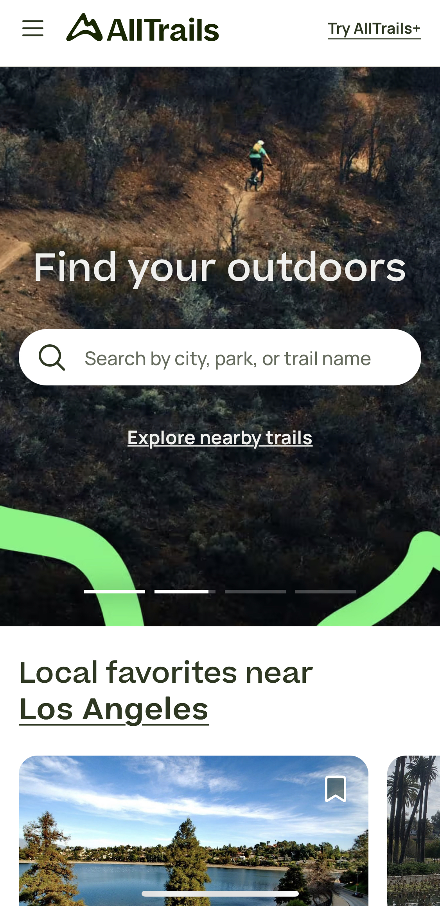

PARC: Contrast
Panicstudio
https://panicstudio.tv/To be honest, I used a search engine to find an example of a website that showed good color schemes along with Contrast. Though it's mostly an animated, it still manages to hold on to a complimentery colors set (though I think there may be more than the suggested five) that creates an eye popping and pleasent expereince. It has good visual hierarchy and the colors don't interact with the fonts in a negative way that prevents readablility. I don't know what the purpose of this site is, I've never been on it before, but I found it to be a good example of such things non-the-less.
Visual Hierarchy
AllTrails
https://www.alltrails.com/ I think this site exemplifies Visual Hierarchy well enough. With the main purpose of this site being a means to locate trails. The first thing you see is the important option of typing either your location or, if you know what you want, the name of the trail you are looking for. For those that don't know what they want, there are options below that arent oversized enough to distract from the main search option.
PARC: Alignment
Forest Service
https://www.fs.usda.gov/main/inyo/
This website (like most webistes I've encountered) provides a decent example of Alignment. With a F Pattern design (mostly) The information that is most important is situated mostly from left to right, with the most important information located along the top, then below that, the content located primarly on the left. It allows for a natural expereince of skimming through the page. I think I could've found a better example, but I'm allready late on this asignment as it is. That being said, I think this site still exemplifies Alignment and design well enough.